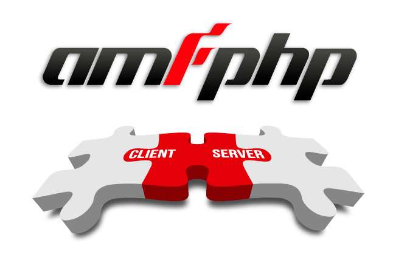

Silex, free website builder
in the cloud



Silex Labs is a foundation dedicated to helping Free communities.
Our main objective is to sustain and expand the Open Source projects, mainly the projects created by our members.
Subscribe to our news letter
Latest news
Get involved
> Volunteer opportunities in a number of different areas
History
> Where we come from and how we got to where we are
Contact
> Let us know what you think
Governance
> Our structure, organization, and the statuses
Networking
In order to support the developement of Open Source projects, and to encourage people to get involved, we have established a network between multiple Open Source communities by providing means to collaborate. We have created a community around our Open Source projects, which is constantly expanding and it conquers new members coming from different social environments and from different domains (developpers, designers, lawyers, …).- We are active on social networks like Facebook or Twitter
- We organize afterworks and hackatons at least once a month : see recent updates. (lien vers : articles events)
Communication
We promote Open Source projects by organizing events on a particular subject and by drafting articles on specialized journals like Arvixe. We consider that communication is one of the best ways to help expanding the Open Source communities. Generally, the Open Source projects cannot evolve mainly because of lack of communication, which in nowadays society has become essential. To remedy this issue, we communicate about Open Source projects :
- Once a year, we organize the international Haxe WordWide Conference (lien vers :page past events)
- After each series of workshop we organize a conference (lien vers : blog outcoming events)
- We publish articles on Arvixe (http://blog.arvixe.com/tag/silex-2/)
- We maintain a communication platform for dedicated projects : (see Silex forum ; Amfphp forum)
Training
Constantly, we organize workshops on a diverse range of topics (free entrance with previous registration). We organize at least one workshop per month about Haxe and Silex, two core projects sustained by the “Silex Labs community”, and a general training session when a new project version is released. These workshops are allowing community members to learn about a particular topic and to be updated with the latest modifications.
- Some workshops are organized in partnership with Multimedia Schools like IESA and Cifacom, who benefit from our experience to integrate basic open source knowledge into their scolarship program. We have established a « Win-Win » relation: our services are appreciated by our partners because we provide free workshops for students or external members, and in return they allow us acces to their conference halls and offer us technical support. Liens vers : Lettres de recommandations de Cifacon / Video interview
- We also organize workshops in partnership with local Clusters for digital contents and services, like Silicon Banlieue (http://www.siliconbanlieue.fr/). The Workshops are open to both members and non-members.
Contribute
You are invited to become a members and get involved if you want to contribute in any way to our community or to benefit from our trainings and workshops. Subscribe to our newsletter to stay in contact.
How to contribute ? Create documents and tutorials, widgets, contribute code or design templates. Talk about it and show off !
How to contribute ? Create documents and tutorials, widgets, contribute code or design templates. Talk about it and show off !
To get an inside look you can download the latest end of year statement of Silex Labs non profit organization.
Silex Labs community of developers and graphic designers is contributing to 3 core projects:
However, several other projects are powered by Silex Labs, see the github repositories of Silex Labs for an exhaustive list.
http://silexlabs2.wordpress.com/core-projects/